on Modern Danish Stamps
By Svend Jensen, Denmark
Lately
I've been putting together for a collector friend a collection of Danish
stamps from the beginning of the 1960s to the beginning of the 1990s,
something like 200+ stamps. When looking through our Danish stamps year by
year, it strikes me how depressing and "socialistic" most of them really
are to look at, so to say "The Workers' and Peasants' State on
Stamps". This is extraordinary, because Denmark has always praised
herself for democracy and liberty, and claims to be inspired by American
liberalism and French individuality. I wonder why this is not expressed
more clearly on postage stamps, which should really act as a kind of
"ambassadors" for our country when we send letters to our friends
abroad. On the contrary, the stamps of this era show mostly depressing
scenes of hard work, or are kept in dark monochrome colors, often pale
and with hardly any contrast at all. The most "extravagant" stamps I
could find show the Laborers' Organization's logo in 4 different colors !!!
Well, it is true that Denmark
is a socialist ruled country with strong control and an even stronger
bureaucracy that removes any incentive from the people.
Obviously also the postal authorities and the stamp designers are
influenced by this ambient philosophy. As I see it, this would be the main reason for issuing stamps of
such a disillusioned and uninspired design.
It is true that most stamps worldwide only became
more "interesting" from around 1970, but even from that time the
Danish stamps are not very appealing, and I really wonder why so many
collectors out there are so mighty interested in our stamps. The only reason I
can come up with would be that Denmark is a fairly small collecting area, with
only a restricted number of issues per year, and therefore is considered a
"serious" country.
Just looking at the stamp below gives a good reason for collecting arts
on stamps worldwide; at least most of them have a better and more pleasant outlook
than those of a socialist country constantly praising itself on stamps for
poor results of its own government.
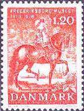 |
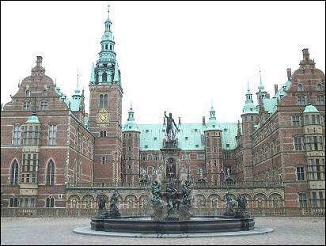 |
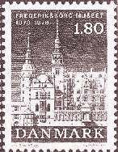 |
The stamps above show a set issued on 16th March 1978 (1,20 red + 1,80 black/gray) and dedicated to the centenary of Frederiksborgmuseet - Nationalhistorisk Museum (Frederiksborg Castle in Hilleroed). The photo shows the same museum as it is. I wonder why was it necessary to issue stamps in black/gray colors, showing this beautiful Baroque Castle, in order to commemorate the centenary of the National Historic Museum? In my opinion it would have been more "powerful" to issue an appealing stamp like a postcard-photo, in order to show the beauty of the castle and in the same time to promote tourism.
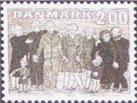 |
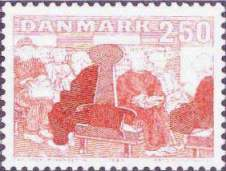 |
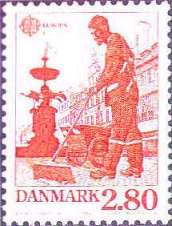 |
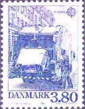 |
The two stamps
to the left were issued on 6th October 1983 for the promotion of public
care for retired people. (2,00 gray/green "Elderly People with
Children" + 2,50 red "Elderly People in Public Transports").
Was it really necessary to show elderly people in monochrome gray-scale
colors, and also why show them worn-out in outdated public
transports? Is that what is understood by "Public Care" ???
The two stamps to the right were issued on 4th
September 1986 as Europe Stamps for Protection of the Environment. (2,80 red
"Sweeper in Central Copenhagen" + 3,80 blue
"Garbage-van"). Why on earth show a sweeper and a garbage-van as
Europe Stamps? Is removal of dust and garbage what Denmark understands
by Protection of the Environment, and is only that what Denmark has to offer the
rest of Europe in this field???
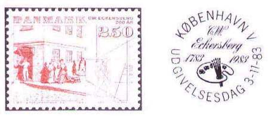 |
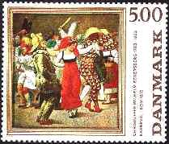 |
Eckersberg's 1983 "Meeting at a Street Corner" (left) was issued on 3rd November 1983, commemorating the bicentennial of his birth (1783). Eckersberg's 1984 "Carnival in Rome" (right) was the first stamp issued in the Danish Classical Art series. Why issue such a "modest" stamp in pale colors and hardly some contrast for the commemoration of such a colorful painter, as shown on the second stamp??? Didn't he deserve better than that for his birth bicentennial???
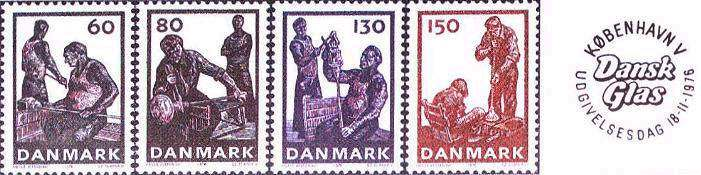
The above set, issued on 18th November 1976, is really in the best tradition of the Soviet socialistic realism. It is important to know that this set is not a commemorative, but a definitive one, for daily use, and as such issued in big quantities. When the stamps are not commemoratives for the crafts itself, then why issue a set of four stamps showing Danish glass blowing, and not the beautiful results of this activity, i.e. the world famed Danish glassware??? If there is an urge to issue a definitive set not depicting as usual the queen, it would, in my opinion, have been more appropriate with a set of one stamp showing the craft, and then 2-3 stamps showing the splendid Danish glassware from Holmegaard or other glass productions. And if the idea to issue a set of craftsmen performing their profession was so stringent, then why must it be done in dark, monochrome color, suggesting sadness, hard work and misery???
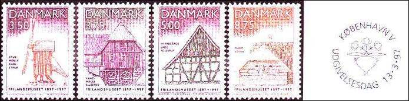
To illustrate that this selective choice of topics and the sad way to present them was not only a whim of fashion through the 1970s and the 1980s, I show above a set issued as late as in the 1990s, where this tendency is clearly visible. On 13th March 1997, celebrating the centenary of the Open Air Museum, Denmark issued a set depicting this institution. It is situated in a spacy and lofty area with big seas and deep forests, in a northern suburb of the capital, and it is more than an attraction - it's a real tourist magnet - because of its beautiful surroundings and its magnificent setting. Is there any reason for making the stamps look so modest??? Haven't the civil servants of Danish postal authorities realized yet that the modern world of Anno Domini 1997 and beyond is multicolored, merry and full of fantasy? The time has come that many of these so called public servants wake up from their centenary sleep, populated with such nightmares!
| Created 01/23/01. Revised: 01/24/01. Copyright © 2001 by Victor Manta, Switzerland. All rights reserved in all countries. |
|